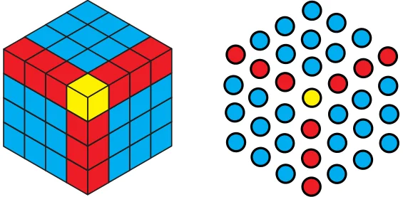

- Can you find a similar pictorial explanation for why adding counting numbers up and down, i.e., 1, \(1 + 2 + 1\), \(1 + 2 + 3 + 2 + 1\), …, gives square numbers?
- By imagining a large version of your picture, or drawing it partially, as needed, can you see what will be the value of
\(1 + 2 + 3 +\) ... \(+ 99 + 100 + 99 +\) ... \(+ 3 + 2 + 1\)?
- Which sequence do you get when you start to add the All 1’s sequence up? What sequence do you get when you add the All 1’s sequence up and down?
- Which sequence do you get when you start to add the counting numbers up? Can you give a smaller pictorial explanation?
- What happens when you add up pairs of consecutive triangular numbers? That is, take \(1 + 3\), \(3 + 6\), \(6 + 10\), \(10 + 15\), … Which sequence do you get? Why? Can you explain it with a picture?
- What happens when you start to add up powers of 2 starting with 1, i.e., take 1, \(1 + 2\), \(1 + 2 + 4\), \(1 + 2 + 4 + 8\), … ? Now add 1 to each of these numbers - what numbers do you get? Why does this happen?
- What happens when you multiply the triangular numbers by 6 and add 1? Which sequence do you get? Can you explain it with a picture?
- What happens when you start to add up hexagonal numbers, i.e., take 1, \(1 + 7\), \(1 + 7 + 19\), \(1 + 7 + 19 + 37\), … ? Which sequence do you get? Can you explain it using a picture of a cube?
- Find your own patterns or relations in and among the sequences in Table 1. Can you explain why they happen with a picture or otherwise?
